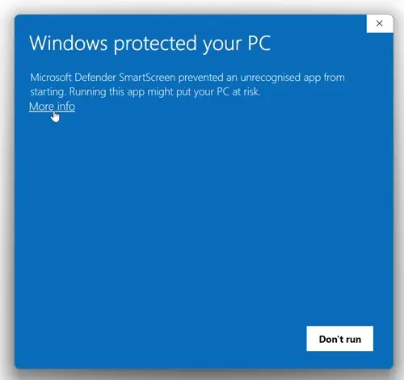
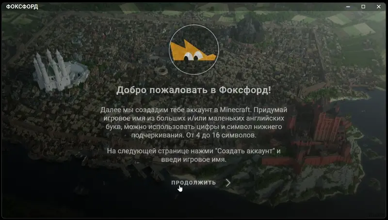

üíª Инструкция по установке –§–õ–ê–£–ù–ß–ï–†–∞ на Windows
Шаг 1: Отключение антивирусов
- Пожалуйста, убедись, что ВСЕ сторонние антивирусы на компьютере ВЫКЛЮЧЕНЫ на момент установки.
Шаг 2: Установка
- Открой загруженный файл.

или
- Если появится предупреждение защиты, все равно запусти. "Подробнее" > "Выполнить в любом случае".
Если не получается, кликни сюда.

или

- Следуй инструкциям мастера установки:
- Дождись завершения установки и нажми "Готово".
Шаг 3: Запуск
- В дальнейшем всегда запускай лаунчер через ярлык на рабочем столе.

- Полная видео-инструкция с момента запуска:

üí° Советы и рекомендации